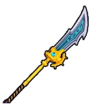
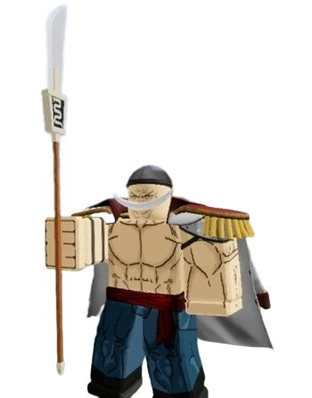

Thanh Bisento là thanh đại đao của Râu Trắng; là một trong những thanh kiếm phẩm chất Huyền Thoại có thể nâng cấp sớm nhất trò chơi.
 Kĩ năng Bisento:
[Z] Phá Gió(Wind Breaker)
Điểm thông thạo: 50.
Người chơi dựng đao lên rồi chém mạnh xuống đất phóng ra một luồng đao khí với sát thương tầm trung và gây đẩy lùi kẻ địch.
[X] Chấn Động Cầu(Quake Sphere)
Điểm thông thạo: 150.
Người chơi cắm chuôi đại đai xuống đất gây chấn động và sát thương diện rộng xung quanh mang theo hiệu ứng đẩy lùi.